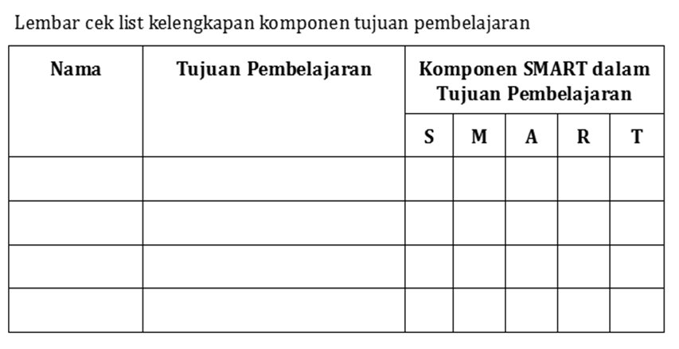

Kegiatan 1. Curah Pendapat (10 menit)
Bapak/Ibu, pada awal kegiatan belajar 1, Anda akan memikirkan kedudukan tujuan pembelajaran dalam proses merancang pembelajaran Biologi. Coba sampaikan pendapat Anda mengenai dua hal berikut:
|
Tuliskan pendapat Bapak/Ibu di tautan Padlet https://s.id/kb1_padlet Ceritakan pendapat Anda kepada rekan yang duduk di samping kiri atau kanan.
Kegiatan 2. Menyaksikan Video dan Diskusi Kelompok (90 menit)
Bapak/Ibu, silakan menyimak video pemaparan mengenai prinsip penyusunan tujuan pembelajaran berdasarkan Capaian Pembelajaran (CP) menggunakan format SMART di bawah ini. Catatlah poin-poin penting yang relevan dengan mata pelajaran Biologi agar dapat menjadi dasar dalam kegiatan analisis berikutnya.
Video tersebut menjadi bahan awal untuk berdiskusi bersama rekan guru lain mengenai penulisan tujuan pembelajaran. Partisipasi aktif Bapak/Ibu sangat membantu pengayaan pemahaman bersama, terutama ketika mengaitkan contoh-contoh tujuan pembelajaran dengan praktik mengajar sehari-hari.
Pembagian kelompok dilakukan berdasarkan fase, yaitu Fase E (kelas X), Fase F kelas XI, dan Fase F kelas XII. Setiap kelompok menganalisis CP terbaru 046/2025 sesuai fase dan kelas masing-masing untuk mengidentifikasi materi atau topik yang bersifat abstrak atau cenderung sulit dipahami oleh murid. Pengalaman mengajar yang dimiliki setiap anggota kelompok menjadi pertimbangan utama dalam menentukan materi yang membutuhkan dukungan tambahan, termasuk pemanfaatan aplikasi KA.
Hasil identifikasi dituangkan ke dalam Format Analisis Materi Biologi dan Dukungan KA. Format tabel dapat diunduh melalui tautan yang tersedia di Lampiran 2 Tahap ini menghasilkan pemetaan materi pada Fase E dan F yang dapat diintegrasikan dengan aplikasi KA yang relevan. Bapak/Ibu dapat meninjau hasil dari kelompok lain, memberikan komentar, serta berdiskusi untuk memperkaya perspektif.
Setiap guru kemudian memilih satu topik dari tabel hasil analisis tersebut untuk dirumuskan menjadi tujuan pembelajaran yang memenuhi prinsip Specific, Measurable, Achievable, Relevant, dan Time-bound, serta sesuai dengan pemanfaatan aplikasi KA. Kebutuhan untuk memperjelas standar kinerja dapat dipenuhi dengan menambahkan komponen Audience, Behavior, Condition, dan Degree. Hasil perumusan tujuan pembelajaran seperti ini memudahkan penyusunan instrumen dan rubrik. Hasil kegiatan ini dapat diisikan dalam tabel cek daftar kelengkapan komponen tujuan pembelajaran yang telah disediakan, dengan format seperti gambar di bawah ini dan tersedia di Lampiran 3.

Selanjutnya, Bapak/Ibu mencermati contoh RPP/Modul ajar pada tautan http://s.id/kb1_ModulAjar untuk melihat keterkaitan tujuan pembelajaran dan pilihan jenis KA dalam proses pembelajaran yang digunakan. Setelah mencermati contoh modul ajar, maka Bapak/Ibu membuat draft modul ajar pada bagian tujuan pembelajaran yang menggunakan media pembelajarn berbasis KA, sebagaimana telah Bapak/Ibu pelajari di Modul 2.
Unggah draft modul ajar karya anda di Tautan Aktivitas KB1
Kegiatan 3. Presentasi (25 menit)
Bapak/Ibu, setiap kelompok pada fase E (kelas XI) dan fase F (kelas XII) menyampaikan hasil rumusan tujuan pembelajaran beserta gambaran pemanfaatan aplikasi KA dalam skenario pembelajaran Biologi. Presentasi ini menjadi kesempatan untuk menelaah kembali ketepatan tujuan pembelajaran, relevansi aplikasi KA, dan keselarasan keduanya dengan CP yang dianalisis pada tahap sebelumnya.
Kelompok lain dapat memberikan masukan yang bersifat konstruktif sehingga setiap Bapak/Ibu memperoleh pengayaan dari berbagai sudut pandang. Proses saling memberi umpan balik menjadi bagian penting dari pembelajaran kolaboratif di komunitas guru Biologi.
Bagian akhir sesi ini diisi dengan penyusunan kesimpulan pembelajaran Kegiatan Belajar 1. Bapak/Ibu dapat menuliskan poin-poin yang dianggap paling penting, mulai dari prinsip perumusan tujuan pembelajaran yang efektif, pemetaan materi yang membutuhkan dukungan KA, hingga kesesuaian antara tujuan pembelajaran dan aplikasi KA yang dipilih.
Pemanfaatan KA dalam pembelajaran Biologi menjadi langkah yang membuka ruang eksplorasi baru. Peran utama tetap berada pada guru yang terus belajar, mengembangkan kreativitas, dan merancang pengalaman belajar yang bermakna bagi murid.